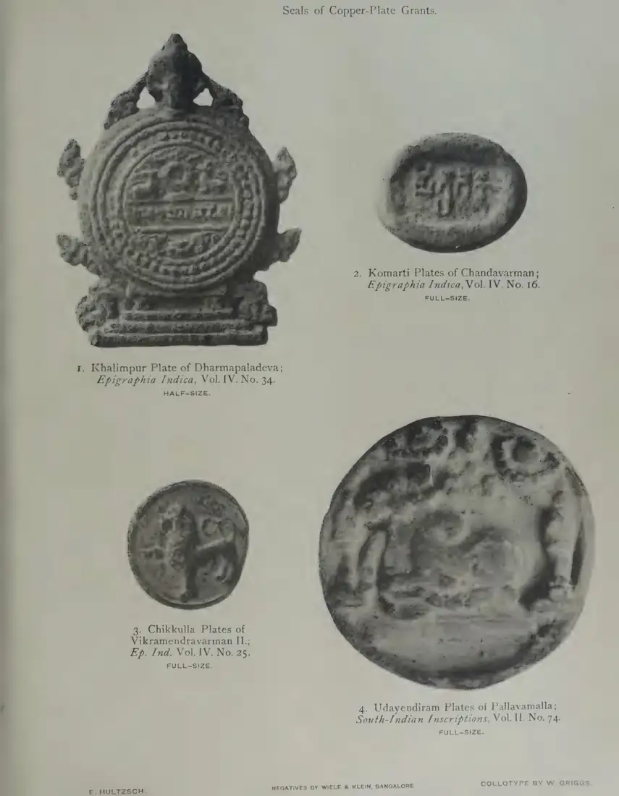

Khālimpur plate of Dharmapāladēva
KHALIMPUR PLATE OF DHARMAPALADEVA.
This plate was discovered by Mr. Umes Chandra Batavyal, I.C.S., in November 1893, at the village of Khālimpur, near Gaur, in the Maldah district of the Bhāgalpur division of the Lieutenant-Governorship of Bengal. It had been found by a Muhammadan cultivator, while ploughing a paddy-field near the village, and was purchased by Mr. Batavyal from his widow. The inscription which it contains has already been published by Mr. Batavyal,1 with a translation and a small but clear photo-etching, in the Journal, Asiatic Society of Bengal, Vol. LXIII. Part I. p. 39 ff. I re-edit it from impressions taken by Dr. Hultzsch, to whom the original plate was kindly sent by Dr. Grierson.
This is a single plate which measures about 11 broad by 1' 4 high. Like the other plates of the same dynasty,2 it is surmounted by a highly wrought ornament, soldered on the top of it, overlapping the upper portion of the plate where it causes a break of about 4" in the first three lines of the writing on either side, and projecting about 5 above the plate. The main part of this ornament is a seal, formed by five concentric rings, the innermost of which is about 2 in diameter. A horizontal line divides the space within this ring into two parts. Above the line is a wheel on a pedestal, with a deer facing it on either side; and immediately below it we have the legend śrīmān=Dharmmapāladēvah, written in one line. Below the legend is another horizontal line, and below this again there seem to be some flowers. The seal rests on a pedestal, and has all round it some projections, the shape of which may be seen from the Plate opposite page 244. The plate is inscribed on both sides. The first side contains 33 lines of writing, and the second 29 lines, the last of which is engraved quite at the bottom of the plate, about 5 distant from the line preceding it. Both the writer and the engraver have done their work with great care, and, although the edges of the plate are not raised into rims, the writing, with the exception of three or four aksharas on the second side, is in an excellent state of preservation. The size of the letters on the first side is about , while on the second side it is only between and .—The characters belong to the northern class of alphabets. Like those of the short Gayâ inscription of Dharmapâla (Sir A. Cunningham's Mahâ-Bôdhî, Plate xxviii. 3), they hold an intermediate position between those of the Dêô-Baraṇârk inscription of Jîvitagupta II. of the family of the Guptas of Magadha (Gupta Inscriptions, Plate xxix. B) and those of the Badâl pillar inscription of the time of Nârâyaṇapâla (Epigraphia Indica, Vol. II. p. 160, Plate). In general, what strikes one, is that letters like p, m, and s are mostly open at the top, and that separate signs are employed to denote final t, n, and m, with the virâma written beneath or over the sign, or attached to the top
1 Mr. Batavyal, by making this inscription known, has rendered a valuable service to Indian epigraphy, and I would leave those who are interested in the subject to find out for themselves where my text and translation differ from his. But I must just mention here that surely Mr. Batavyal has been rather rash in stating that the grant recorded in this inscription was made in favour of the poet Bhaṭṭa Nârâyaṇa. So far as I can see, his error is due, in the first instance, to a misapprehension of the meaning of the word pâdamûla in line 51 of the text. According to Mr. Batavyal, the adjective pâdamûla-samêta means 'one who came to visit,' and the substantive Nârâyaṇa-bhaṭṭâraka, which that adjective qualifies, therefore cannot denote the god Nârâyaṇa, but "plainly refers to some person whose name was Nârâyaṇa." Really pâdamûla denotes the attendants of some god or idol, and Nârâyaṇa-bhaṭṭârakah pâdamûla-samêtah therefore literally can only mean 'the lord Nârâyaṇa, associated with his attendants.'
2 These plates are the Mungir plate of Dêvapâla, As. Res. Vol. I. p. 123 ff., and Ind. Ant. Vol. XXI. p. 253 ff.; the Phâgalpur plate of Nârâyaṇapâla, Jour. Beng. As. Soc. Vol. XLVII. Part I. p. 384 ff., and Ind. Ant. Vol. XV. p. 304 ff.; the Dinâjpur plate of Mahîpâla, Jour. Beng. As. Soc. Vol. LXI. Part I. p. 77 ff.; and the Âmgâchhî plate of Vigrahapâla III., As. Res. Vol. IX. p. 434 ff., and Ind. Ant. Vol. XIV. p. 166 ff. and Vol. XXI. p. 97 ff.
of it, or, in the case of final t, without the virðma.1 As regards individual letters, the lower part of m throughout is formed by a straight arm, pointing in an upward direction to the left, and shows nowhere a loop or round knob.2 The conjunct rth, which occurs only in the word sðháyakárthað3 in line 13, is denoted by a sign of its own, which has developed out of the sign for rth as it appears in line 12 of the Aphsað inscription of Âdityasêna (Gupta Inscriptions, Plate xxviii.), and which we find in nearly the same form in the Kôtâ Buddhist inscription of the Sámanta Dêvadatta4 of Vikrama-Sarívat 847(?). The sign for t is similar to the sign for the same letter in the Deopara inscription of Vijayasêna (Epigraphia Indica, Vol. I. p. 308, Plate), except that the vertical line on the right is drawn quite down to the bottom. The initial í is three times (in iva, ll. 3 and 4, and iti, l. 7) formed by a horizontal top line, such as is generally found in consonant-signs, with two circles below it; and three times (in iti, ll. 52, 56, and 58) by two circles, with a line which slants down from the left to the right below them.5 The sign of visarga is sometimes expressed by a single circle, with a hook or curved line below it.6 The sign of avagraha7 is employed three times, in grámó šeya, l. 31, tató šsmábhis, l. 52, and yathá šsmábhir, l. 49; and numeral figures for 1, 2 and 3 are used in line 61. Having compared a large number of lithographs and impressions of other inscriptions, I have come to the conclusion that the alphabet here employed may fairly be described as a Magadha variety of the Nágarí alphabet, and that, on palaeographical grounds, the inscription may confidently be assigned to the ninth century A.D.—The language is Sanskrit. The inscription, after the words óðn svasti with which it commences, has a verse invoking the protection of Buddha, who here, as in the Ghôsráwâ inscription, is called Vajrásana, and, after that, twelve other verses in praise of the king Dharmapála and his ancestors; and it contains five benedictive and imprecatory verses in lines 56-60, and another verse, which gives the name of the engraver, in line 62. The rest of the text is in prose. As regards orthography, the letter b is throughout expressed by the sign for v; the palatal sibilant is used8 instead of the lingual in višvag=, l. 12, and višayé, l. 31, and instead of the dental in the word arddhašrôtiká, l. 34 ff.; the dental n is employed instead of anusvára in yašánsy=, l. 60;
1 Final m is throughout denoted by a half-form of m (i.e. an m without the horizontal top-line) with the sign of virðma below (but not attached to) it; e.g. in anuyðtam, l. 14. Final t is five times denoted by a final form of t, without the virðma, e.g. in vibhramðt, l. 26; once, in antarðlát, l. 28, by a half-form of t with the virðma above it; once, in aurvavat, l. 16, by a nearly full form of t with the virðma attached to the top of it; and once, in vasêt, l. 57, by the ordinary form of t with the virðma attached to the foot of it. Final n is generally denoted by a half-form of n, with the virðma below it, and once, in šrimán, l. 30, above it; four times by the full form of n with the virðma attached to the top of it, as in bhúvan, l. 17; and once, in nichitán, l. 17, by the full form of n with the virðma below it.
2 In the Ghôsráwâ Buddhist inscription of the time of Dêvapála (Ind. Ant. Vol. XVII. p. 309, Plate) the m with the loop is still the exception, but in the Badál pillar inscription and in the Bhágalpur plate of Náráyaṇapála it is used throughout.
3 Mr. Batavyal read this sðháyakárað. The sign for rth, here used, of course owes its origin to the fact that the sign for r was written on the line, not above it.
4 See Ind. Ant. Vol. XIV. p. 46. I owe excellent impressions of that inscription to Dr. Fleet.
5 The first form of í, described above, we find in the word iva in line 2 of the Ašírgaðh seal of the Maukhari king Šarvavarman (Gupta Inscr. Plate xxx. A), and it is used throughout in the Badál pillar inscription (as well as in the Bhágalpur plate of Náráyaṇapála, the Dinájpur plate of Mahípála, the Gayâ inscription of Yakshapála, and in inscriptions at Sirpur, Archæol. Surv. of India, Vol. XVII. Plate xviii.); and the second form we have in the word Ijjá in line 5 of the Dêð-Baraṇárk inscription of Jívitagupta II. of Magadha (Gupta Inscr. Plate xxix. B).
6 This sign is used 11 times, from ððvah in line 30 to prativðsinah in line 48. In one or two cases I am doubtful whether it is meant for visarga or for anusvára.
7 The sign of avigraha occurs once (in line 8) in the Kôtâ inscription of Dêvadatta of Vikrama-Sarívat 847 (?), and once (in line 5) in the Gwálior inscription of Bhójadêva of Kanauj of Vikrama-Sarívat 933, Ep. Ind. Vol. I. p. 159. In the Ghôsráwâ inscription it is used no less than seven times, but in the Badál pillar inscription only twice.
8 This use of the palatal sibilant may be accounted for by the influence of the Mágadh Prákřit.
Plate 1 is bound after this page.
and the word chaturshu is written chaturushu in line 44.1 In respect of the observance of the rules of saṅdhi, it may be noted that m is several times retained before v, instead of being changed to anusvāra, not only in samvat, l. 61, but also at the end of words, e.g. in -vapushām=vāhīnīnām=vidhātuīn, l. 20; that t is doubled before r in rājaputtra, l. 32, and attra, l. 60; that the conjuncts dv and dhv are incorrectly employed instead of ddv and ddhv in -kridvīpah, l. 41, and vudhvā, l. 58 (but not in vuddhvā, l. 60); and that visarga several times has been wrongly omitted, e.g. in akīrtti kshapayatām, l. 59. The only other point of grammar that need be drawn attention to here is the employment of the word uparilikhitaka, for uparilikhita, in line 52, for which we now can quote numerous analogous instances from other inscriptions.2 The prose (formal) part of the text offers a considerable number of words, some of them technical terms, which, so far as I know, have not yet been met with elsewhere, and the meaning of some of which is obscure. Thus, in the description of the boundaries of the villages in lines 31-43, we find ardhasrōtikā, khātaka, khāṭikā, jōlaka, bhishuka (?), and yānaka or yānikā, (and perhaps some others, if they are not proper names), some of which may have been drawn from the writer's vernacular. In the long list of officials, enumerated in lines 44-47, we have the Shashthādhikrita, Daṇḍaśakti, Khōla, Jyéshṭhakāyastha and Dāśagrāmika, who are not mentioned in other inscriptions which I have been able to compare. And revenue-terms peculiar to our text are talapāṭaka3 and hatṭikā in lines 51 and 52, and piṇdaka in line 55.
The inscription is one of the devout worshipper of Sugata (Buddha), the Paramésvara Paramabhatṭāraka Mahārājādhirāja Dharmapāladēva, and records that the king, at the request of his Mahāsāmantādhipati Nārāyaṇavarman, which was communicated to him by the Dūtaka, the Yuvarāja Tribhuvanapāla,4 granted four villages to a temple of the god N[u]nna-Nārāyaṇa, which had been founded by Nārāyaṇavarman at Śubhasthali. It is the earliest record of any extent that has yet been found of the Pāla5 dynasty, but, excepting that it gives us the names of the father and grandfather—Vapyaṭa and Dayitavishnu—of Gōpāla [I.], and relates that, to put an end to lawlessness and disorder, Gōpāla was induced by the people to assume the sovereignty, and that he married the Bhadra6 king's daughter Dēddadēvi, it tells us nothing whatever that was not known before regarding that dynasty. About Gōpāla, its founder, we learn no more from it than what has just been stated. Of Dharmapāla, his and Dēddadēvi's son; the only fact recorded is, that he installed a certain king of Kanyakubja (or Kanauj), to the joy of the people of Pañchāla, and with the ready approval of the Bhōjas, Matsyas, Madras, Kurus, Yadus, Yavanas, Avantis, Gandhāras and Kiras. And of this even we already had a more specific account in the third verse of the Bhāgalpur plate of Nārāyaṇapāla, according to which Dharmapāla gave back again the sovereignty of Mahōdaya (or Kanauj), which he had acquired by defeating Indrarāja and other enemies, to the begging Chakrāyudha.
1 Compare aruhati for arhati, above, Vol. III. p. 143.
2 Compare, e.g., bhuktaka in line 10 of the Madhuban plate of Harsha, Ep. Ind. Vol. I. p. 73, and see Gupta Inscr. p. 69.
3 In a note on the translation I have drawn attention to the fact that the Dēđ-Baraṇārk inscription of Jīvitagupta II. of Magadba (Gupta Inscr. No. 46) contains the word talāvāṭaka as the designation of some official. Perhaps I may mention here that that inscription, too, contains an unusually long list of officials—in line 10, what has been understood to be the name of a village, appears to me really to be kićōra-vaḍavā-gō-mahishy-adhikrita—and that in line 14 of it we have the same word yathākālādhydsin which we have in line 47 of the present inscription, and which, if my memory serves me rightly, is not of ordinary occurrence except in inscriptions from Orissa.
4 The Dūtaka of the Mungir plate of Dēvapāla also was a Yuvarāja, the king's son Rājyapāla; see Ind. Ant. Vol. XXI. p. 258.
5 This designation of the family actually occurs in line 4 of the Kamauli plate of Vaidyadēva, Ep. Ind. Vol. II. p. 350.
6 The Bhadras are variously placed in the middle country, or in the eastern or southern division of India; Ind. Ant. Vol. XXII. p. 174.
No king Chakrâyudha of Kanauj is known to us from other inscriptions, and all that can be said with confidence regarding the event spoken of in the two copper-plates is, that, counting back eight generations from the date of the king Mahípâla, Vikrama-Samvat 1083 = A.D. 1026-27, it must have taken place about the middle or in the earlier part of the 9th century A.D.1—The peoples or tribes, which in the present inscription are stated to have readily accepted the king installed by Dharmapâla, are mostly such as would be expected to have had dealings with Kanyakubja. Kanyakubja itself was in the country of the Pañchâlas in Madhyadêsa. According to the topographical list of the Brihatsaṅhitâ,2 the Kurus3 and Matsyas also belong to the middle country, the Madras to the north-west, the Gandhâras to the northern, and the Kîras4 to the north-east division of India. The Avantis are the people of Ujjayinî in Mâlava. Yadus, according to the Lakkhâ Maṇdal Praśasti,5 were long ruling in part of the Panjâb, but they are found also south of the Yamunâ; and south of this river and north of the Narmadâ probably were also the Bhôjas who head the list. Of the Yavanas it is difficult to speak with any certainty, but it seems not improbable that the word Yavana is used here simply in the sense of Mléchchha, and is put in, next to the word Yadu, rather for the sake of poetical ornamentation than with the object of conveying any very definite meaning.— Dharmapâla, when he made this grant, resided at Pâtaliputra, the modern Patnâ, on the Ganges. The orders of his successors Dêvapâla and Nârâyaṇapâla were issued from Mudgagiri (Mungir or Monghyr), and that of Mahípâla from Vilâsapura. In the plate of Vigrahapâla III. the name of the king's residence is illegible.
The grant, as already stated, was made to a temple of the god N[u]nna-Nârâyaṇa, or, more fully, 'to the holy lord N[u]nna-Nârâyaṇa (bhagavan-N[u]nna-Nârâyaṇa-bhatṭâraka), installed there (tatra pratishthâpita) [viz. at the temple founded by Nârâyaṇavarman], associated with (i.e. and to) the Lâṭa6 Brâhmaṇas, priests and other attendants who wait upon him.' The words of the text which thus describe the donee exactly correspond to the words tatra pratishthâpitasya bhagavataḥ Śivabhatṭârakasya pâsupatâchârya-parishadaś-cha in line 39 of the Bhâgalpur plate, by which a donation was made in favour of the god Śiva. Their general
1 For a list of the Pâla kings from Gôpâla I. to Vigrahapâla III. see Ind. Ant. Vol. XXI. p. 99. For the rulers of Kanauj we possess no date between that of the Bengal As. Soc.'s plate of the Mahârâja Vinâyakapâla, [Harsha-]Samvat 188 = A.D. 783-84 (Ind. Ant. Vol. XV. p. 140), and that of the Dêôgadḥ inscription of the Mahârâjâdhirâja Bhôjadêva, the successor of the Mahârâjâdhirâja Râmabhadradêva, Vikrama-Samvat 919 = A.D. 862 (Archæol. Surv. of India, Vol. X. p. 101). When treating of the verse of the Bhâgalpur plate on a former occasion (Ind. Ant. Vol. XX. p. 187), I suggested, with some diffidence, that the ruler who was placed on the throne of Kanauj by Dharmapâla might possibly have been Bhôjadêva. I was quite aware then of the statement in the Jaina Harivamśa-Purâṇa (Dr. Rajendralal Mitra's Notices, Vol. VI. p. 80; Ind. Ant. Vol. XV. p. 141; Dr. Bhandarkar's Early History, 2nd ed., p. 65), that in Śaka-Samvat 705 = A.D. 783-84, when that work was composed, the north was governed by a certain Indrâyudha, but did not venture to place Dharmapâla so early as to allow of his having had dealings with that king. I even then felt convinced that there must be some connection between the Indrâyudha of the Harivamśa-Purâṇa and the king Indra and Chakrâyudha of the Bhâgalpur plate. What that connection was, I do not know; and I am unwilling to put forth another conjecture on a question which any day may be settled by the discovery of a properly dated inscription that may tell us something about the state of Kanauj in the first half of the 9th century A.D.
2 See Ind. Ant. Vol. XXII. p. 169 ff.
3 In Ep. Ind. Vol. I. p. 132, v. 23, the Kurus are reported to have been defeated by the Chandélla Yaśôvarman.
4 Ibid. p. 124, it will be seen that a king of Kanauj once received an image of the god Vaikunṭha from a king of Kîra. Ibid. Vol. II. pp. 15 and 194, the Kîras are represented as having been held in check or defeated by the Chêdi Karṇa and the Paramâra Lakshmadêva; but in either case the writer probably thought more of his pun than of telling a real fact.
5 Ibid. Vol. I. p. 10 ff. Dr. F. E. Hall's edition of this inscription, in Jour. Roy. As. Soc. Vol. XX. p. 452 ff., seems to have been quite lost sight of.
6 Lâṭa is central and southern Gujarât, and it seems very appropriate that Gujarât Brâhmaṇas should have been in charge of the temple of Nârâyaṇa (Vishnu-Kṛishṇa), whose own principal residence was Dvârakâ in Gujarât.
sense is perfectly plain, and all that by any chance might be considered to be open to discussion in them, is the exact meaning of the term nunna (or possibly nanna) which is prefixed to the name Nārāyaṇa. In other inscriptions we have bhagavat(ch)-śrī-Nārāyaṇabhaṭtārakāya1 or bhagavantamśrīman-Nārāyaṇabhaṭtārakam=uddiśya,2 but nunna (or nanna) conveys no such meaning as śrī or śrīmat do. Nor is it possible to form the compound bhagavannunna3 and make it qualify Nārāyaṇabhaṭtāraka; for that compound would not convey any appropriate sense, and bhagavat clearly goes together with the bhaṭtāraka whoever he may be. What remains then, in my opinion is, to take N[u]nna-Nārāyaṇa together to be the name of the god for whom the temple had been built by Nārāyaṇavarman, and to assume that the god Nārāyaṇa was so called in honour of the founder's father, whose name, in that case, must have been N[u]nna. Or, if the true reading of the text should be Nanna-Nārāyaṇa, it might also be possible to regard Nanna4 as another name of the founder of the temple, Nārāyaṇavarman, himself, and in this case Nanna-Nārāyaṇa would exactly correspond to Kamala-Nārāyaṇa, the name of the god Nārāyaṇa for whom a temple was built at Dēgāmīve by the Kādamba queen Kamalādēvī.5 However this may be, the general practice of naming gods or their temples in the manner described is notorious.6
The names of the four villages, granted at Nārāyaṇavarman's request by the king, are Krauñchasvabhra, Māḍhāsāmmalī, Pālitaka, and Gōpippalī. The three first were in the Vyāghratatī maṇḍala of the Mahantāprakāśa vishaya7 of the Puṇḍravardhana bhukti, while the last was in the Āmrashaṇḍikā maṇḍala of the Sthālīkkaṭa vishaya, clearly of the same bhukti. Their boundaries are fully given in lines 31-43; but, owing to the fact that this passage contains a number of obscure words and to the want of maps by which some of the places might perhaps be identified, I cannot give a proper account of them. Some localities here mentioned are the Udragrāma maṇḍala, the villages Kālikāśvabhra, Gaṅginikā and Jēnandāyikā, and the small island of Kāṇā; besides, mention is made of the river Kōṇthiyā.
The inscription is dated, in lines 60-61, '12 days (i.e. on the 12th day) of Mārga of the year 32 of the increasing reign of victory' (of Dharmapāla).8—It was engraved by Tātaṭa, the son of Subhaṭa and grandson of Bhōgaṭa.
TEXT.9
First Side.
| 1 | Ôm10 | svasti | [||*] | Sarvvajñatâm11 | śriyam=iva | sthiram=āsthitasya | Vajrása- |
| 2 | nasya | va(ba)hu-māra-kul-ôpalambhâh | | | dēvyâ | mahâ-karuṇayâ | paripâ- | |
| 3 | lītâni | rakshantu | vô | daśa | va(ba)lâni | diśô | jayanti || [1*] Śriya12 iva subhagâ- |
1 Line 20 of the Pâṇḍukéśvar plate of Lalitaśúra, Proceedings, Beng. As. Soc. 1877, p. 72.
2 Line 45 of the Tarpandighī plate of Lakshmaṇasēna, Jour. Beng. As. Soc. Vol. XLIV. Part I. p. 12.
3 I only mention this on account of Mr. Batavyal's translation 'the God-guided Bhaṭta Nārāyaṇa.'
4 The name Nanna occurs in the passage of the Harivamśa-Purāṇa, referred to in note 1 on page 246 above; and it is also found elsewhere. A name Nunna I have not met with elsewhere.
5 See Dr. Fleet's Dynasties, 2nd ed., p. 569.
6 Alla, the son of Vāillabhaṭta, built a temple of Vishṇu called Vāillabhaṭtasvâmin, Ep. Ind. Vol. I. p. 154; Mathanadēva founded a temple of Íśvara (Siva), called Lachchhukéśvara after his mother Lachchhukâ, ibid. Vol. III. p. 263. In other cases the idol or temple was called after the founder, e.g. Nôhalésvara after Nôhalâ, ibid. Vol. I. p. 270; or from the locality where it was, e.g. Lôṇâdityadēva from the place Lavaṇētaṭa, ibid. Vol. III. p. 275. Names of the god Nārāyaṇa, with which N[u]nna-Nārāyaṇa may be compared, (besides Kamala-Nārāyaṇa) are Ballāla-Nārāyaṇa, Rāpa-Nārāyaṇa, and Góga-Nārāyaṇa; Ind. Ant. Vol. VI. p. 212, and Vol. X. p. 160.
7 See below, p. 253, note 3.
8 The other copper-plates of the same dynasty are also dated in regnal years, but omit the words 'of the increasing reign of victory.'
9 From impressions supplied by Dr. Hultzsch.
10 Expressed by a symbol.
11 Metre: Vasantatilakâ.
12 Metre: Mâlinî.
4 yâh sambhavô vârirâsîs=šašadhara iva bhâsô viśvam=âhlâdayantyâh | prakṛitir=
avanipânâin santatêr=uttamâyâ a-
5 jani Dayitavishnuh sarvvavidy-âvadâtah || [2*] 1Âsîd=â sâgarâd=urvvîin
gurvvîbhih kîrttibhih kṛitî | manđayan
6 khandit-ârâtih ślâghyah śrî-Vapyaṭas=tatah || [3*] 2Mâtsya-nyâyam=apôhitum
prakṛitibhir=Lakshmyâh karaâ=grâhitah śrî-Gôpâ-
7 la iti kshitîśa-śirasâm chûđâmanis=tat-sutah | yasy=ânukriyatê sanâtana-yasô-
râśir=diśâm=âsayê śvêtimnâ ya-
8 di paurṇnamâsa-rajanî jyôtsn-âtibhâra-śriyâ || [4*] Śitâmśôr=iva Rôhinî Huta-
bhujah Svâh=êva têjô-nidhêh Śarvâṇ=î-
9 va Śivasya Guhyaka-patêr=Bhadr=êva Bhadr-âtmajâ | Paulôm=îva Purandarasya
dayitâ śrî-Dêddadêv=îty=abhûd=dêvî tasya vinô-
10 da-bhûr=Mura-ripôr=Lakshmîr=iva kshmâ-patêh || [5*] Tâbhyâm3 śrî-
Dharmmapâlah samajani sujana-stûyamân-âvadânah svâmî bhûmî-
11 4patînâm=akhila-vasumatî-manđalam śâsad=êkah [[*]] chatvâras=tîra-majjat-kari-gaṇa-
charaṇa-nyasta-mudrâh samudrâ yâtrâm ya-
12 sya kshamantê na bhuvana-parikhâ viśva(shva)g=âsâ jigîshôh || [6*] Yasminn=
uddâma-lîlâ-chalita-va(ba)la-bharê dig-jayâya pravrittê yântyâ-5
13 [m=v]iśvambharâyâm chalita-giri-tiraśchînatâm tad-vasêna | bhâr-âbhugn-âvamajjan-
mani-vidhura-śiras-chakra-sâhâyakârtham Śêshê-
14 ṇ=ôdasta-dôshṇâ tvaritataram=adhô=dhas=tam=êv=ânuyâtam || [7*] 6Yat-prasthânê
prachalita-va(ba)l-âsphâlanâd=ullaladbhir=dhûlî-pûraih pihi-
15 ta-sakala-vyômabhir=bhûtadhâtryâh | samprâptâyâh parama-tanutâm chakravâlam
phaṇânâm magn-ônmîlan-mani Phaṇipatêr=lâ-
16 ghavâd=ullalâsa || [8*] 7Viruddha-vishaya-kshôbhâd=yasya kôp-âgnir=aurvavat |
anirvṛiti8 prajajvâla chatur-ambhôdhi-vâritah || [9*]
17 9Yê=bhûvan Pṛithu-Râma-Râghava-Nala-prâyâ dharitrîbhujas=tân=êkatra didṛikshup=
êva nichitân sarvân samam=Vêdhasâ10 | dhva-
18 st-âsêsha-narêndra-mâna-mahimâ śrî-Dharmmapâlah kalauq lôla-śrîkariṇî-
niva(ba)ndhana-mahâstambhah samuttambhitah || [10*] Yâsâm11
19 nâsîra-dhûlî-dhavala-daśa-diśâm drâg=apaśyann=iyattâm dhattê Mândhâtri-sainya-
vyatikara-chakitô dhyâna-tandrîm=Mahêndrah |
20 tâsâm=apy=âhavêchchhâ-pulakita-vapushâm=vâhinînâm=vidhâtum13 sâhâyyam yasya
vâ(bâ)hvôr=nikhila-ripukula-dhvamsinôr=n=â-
21 vakâśah || [11*] Bhôjair=Matsyaih sa-Madraih Kuru-Yadu-Yavan-Âvanti-
Gandhâra-Kirair=bhûpair=vyâlôla-mauli-praṇati-pariṇataih |
22 sâdhu sangîryamâṇah | hrishyat-Pañchâla-vṛiddh-ôddhṛita-kanakamaya-
svâbhishêkôdakumbhô dattah śrî-Kanyakuvja(bja)s=sa-lalita-cha-13
23 lita-bhrûlatâ-lakshma yêna || [12*] Gôpaih14 sîmni vanêcharair=vanabhuvi grâm-
ôpakaṇthê janaih krîđadbhi[h*] pratichatvaram śiśu-gaṇaih |
24 pratyâpaṇa[m]=mânapaih15 | lîlâ-vêśmani pañjarôdara-śukair=udgîtam=âtma-stavam
yasy=âkarṇnayatas=trapâ-vivalit-ânamram sa-
1 Metre: Ślôka (Anushṭubh).
2 Metre: Śârdûlavikrîđita; also of the next verse.
3 Metre: Sragdharâ; also of the next verse.
4 Originally patînâm seems to have been engraved.
5 Read yântyâm vi2.
6 Metre: Mandâkrântâ.
7 Metre: Ślôka (Anushṭubh).
8 Read anivritti.
9 Metre: Śârdûlavikrîđita.
10 Read samam Vêdhasâ.
11 Metre: Sragdharâ; also of the next verse.
12 Read -vapushâm vâhinînâm vidhâtum.
18 Instead of Kanyakuvjas, one would have expected Kânyakuvjas.
14 Metre: Śârdûlavikrîđita.
15 This appears to be the true reading of the original; possibly mânapaih may be an error for mânavaih.
25 d=aiv=ânanam || [13*] Sa khalu Bhâgîrathîpatha-pravarttamâna-nânâvidha-nauvâtaka-sampâdita-sêtuva(ba)ndha-nihita-sailasi-
26 khara-śrêpi-vibhramât1 niratisaya-ghana-ghanâghana-ghatâ-śyâmâyamâna-vâsaralakshmi-samâravdha(bdha)-santata-jaladasa-
27 maya-sandêhât2 udichîn-ânêka-narapati-prâbhrîti krit-âpramôya-hayavâhinî-kharakhur-ôtkhâta-dhûlf-dhûsarita-di-
28 gantarâlât paramêsvara-sêvâ-samâyâta-samasta-Jamvû(mbû)dvîpa-bhûpâl-ânanta-pâdâta-bhara-namad-avanêh Pâtalipu-
29 tra-samâvâsita-śrîmaj-jayaskandhâvârât paramasaugatô mahârâjâdhirâja-śrî-Gôpâladêva-pâdânudhyâtah pa-
30 ramêsvarah paramabhattârakô mahârâjâdhirâjah śrîmân Dharmmapâladêvah kušalî || Śrî-Puṇdravarddhanabhu-
31 kty-antahpâti-Vyâghratatimaṇdala-samva(mba)ddha-Mahantâprakâś a v i śa ( s h a ) y ê 3 Krauñchasvabhra-nâma-grâmô ssya cha sîmâ4 paschi-
32 mêna Gaṅginikâ | uttarêna Kâdamva(mba)rî-dêvakulikâ kharjjûra-vṛikshaś= cha | pûrvvôttarêna râjaputtra-Dêvaṭa-krît=âlih | vî-
33 japûrakan=gatvâ pravishtâ | pûrvvêna Viṭak-âlih khâtaka-yânikâ[m] gatvâ pravishtâ | jamvû(mbû)-yânikâm=âkramya jamvû(mbû)-yânaka[m]
Second Side.
34 gatâ | tatô nisṛityâ5 puṇyârâma-vi(bi)lv-ârddhaśrô(srô)tikâ[m?] | tatô=pi nisṛitya na-
35 lacharmma[t-ô]ttarântam gatâ nala[cha]rmmatât dakshiṇêna nâmuṇdikâpi[hê]-
36 [sadûmmi ?]kâyâh | khaṇdamuṇdamukhain khaṇdamukhâ vêdasavi(bi)lvikâ vêdavi(bi)lvikâtô rôhitavâtih piṇdâravitjôtikâ-sîmâ
37 u[kt]ârajôṭasya dakshiṇântah6 grâma-vi(bi)lvasya cha dakshiṇântah6 | dêvikâ-sîmâ viti | dharmmâyô-jôtikâ | Êvam=Mâđhâśâmmali nâ-
38 ma grâmah. [[*]] asya ch=ôttarêna Gaṅginikâ sîmâ tatah pûrvvên= ârddhaśrô(srô)tikayâ âmrayânakôlarddhayânikan=gatah7 ta-
39 tô=pi dakshiṇêna Kâlikâśvabhrah | atô=pi nisṛitya śrîphala[bh]ish[u]kain yâvat= paschimêna tatô=pi vi(bi)lvaṅgôrddhaśrô(srô)ti-
40 kayâ Gaṅginikâm pravishtâ | Pâlitakê sîmâ dakshiṇêna Kânâ dvîpikâ | pûrvvêna Kôṇthiyâ srôtah [[*]] uttarêna
41 Gaṅginikâ | paschimêna Jênandâyikâ | êtad-grâma-sampârîna-parakarmma- kṛidvîpah8 | Sthâlikkaṭavishaya-
42 samva(mba)ddh-Âmrashaṇdikâmaṇdal-ântahpâti-Gôpippali-grâmasya sîmâh | pûrvvêna9 Udragrâma-maṇdala-paschima-sîmâ | dakshi-
43 nêna jôlakah [[*]] paschimêna Vêsânik-âkhyâ khâtikâ | uttarên=Ôdragrâma-maṇdala- sîmâ-vyavasthitô gô-mârgah | Êshu cha-
44 turushu10 grâmêshu samupagatân sarvvân=êva râja-râjanaka-râjaputra-râjâmâtya-sênâpati-vishayapati-bhôgapati-shashthâdhi-
1 Read -vibhramân=.
2 Read -sandêhdâ=.
3 See below, p. 253, note 3.
4 Originally sîmô was engraved.
5 Read, here and below, nihṛitya. Some corrections no doubt are necessary in the following lines, but I do not understand the text properly.
6 This might possibly both times be read dakshiṇântam.
7 The intended reading may be °yânikân=gatâ.
8 Read -kṛid=dvîpah.
9 Read pûrvvên=Ôdra.
10 Read turshu.
45 kṛita-daṇḍasakti-dâṇḍapâsika-chaurôddharaṇika-daussâdhasâd ha n i k a - d û t a - k h ô l a - gamâgamik-âbhitvaramâṇa-hastyaś vagômahishyajâ-
46 vikâdhyaksha-n[au]kâdhyaksha-va(ba)lâdhyaksha-tari ka-śaulkika-gaulmika-tadâyuktaka-viniyuktak-âdi-râjapâdôpajîvinô=nyâinś=ch=âkîrtti-
47 tân1 châṭabhatajâtîyân yathâkâl-âdhyâsinô jyêshṭhakâyastha-mahâmahattara-mahattara-dâśagrâmik-âdi-vishayavyavahâriṇah
48 sa-karaṇân prativâsinah kshêtrakarâinś=cha vrâ(brâ)hmaṇa-mânanâ-pûrvvakam yathârham=mânayati vô(bô)dhayati samâjñâpayati cha | Matam=astu
49 bhavatâm [|*] Mahâsâmantâdhipati-śrî-Nârâyaṇavarmmaṇâ dûtaka-yuvarâja-śrî-Tribhuvanapâla-mukhêna vayam=êvam=vijñâpitâh2 yathâ śsmâ-
50 bhir=mmâtâpitrôr=âtmanas=cha puṇy-âbhivrîddhayê Śubhasthalyân dêvakulan=kâritat(n)=tatra pratishṭhâpita-bhagavan-N[u]nnaNârâyaṇa-bhaṭṭârakâya3 tatpra-
51 tipâlaka-Lâṭadvija-dêvârchchak-âdi-pâdamûla-samêtâya pûj-ôpasthân-âdi-karmmaṇê chaturô grâmân4 atratya-hatṭikâ-talapâṭaka-
52 samêtân=dadâtu dêva iti | tatô śsmâbhis=tadîya-vijñaptyâ5 êtê upari-likhitakâś=chatvârô grâmâs=talapâṭaka-hatṭikâ-samêtâh sva-
53 símâ-paryantâh sôddêsâh sadasâpachârâh6 akiñchitpragrâhyâh7 parihṛita-sarvvapîdâh8 bhûmichchhidra-nyâyêna chandr-ârka-kshiti-samakâlam
54 tath=aiva pratishṭhâpitâh9 | yatô bhavadbhis=sarvvair=êva bhûmêr=ddâna-phala-gauravâd=apaharaṇê cha mahânarakapât-âdi-bhayâd=dânam=idam=anumô-
55 dya paripâlanîyam | prativâsibhih kshêtrakaraiś=ch=âjñâśravaṇa-vidhêyair=bhûtvâ samuchita-kara-piṇdak-âdi-sarvva-pratyây-ôpanayah kârya
56 iti || 10Va(ba)hubhir=vvasudhâ dattâ râjabhis=Sagar-âdibhih [|*] yasya yasya yadâ bhûmis=tasya tasya tadâ phalam |(||) 11Shashṭim=varsha-sahasrâni svargê mô-
57 dati bhûmidah [|*] âkshêptâ ch=ânumantâ cha tâny=êva narakê vasêt || Sva-dattâm=para-dattâm=vâ12 yô harêta vasundharâ[m] [|*] sa vishṭhâyân=kṛimir=bhûtvâ pîtrî-
58 bhis=saha pachyatê || Iti13 kamaladal-âmvu(mbu)vindu-lôlâm śriyam=anuchintya manushya-jîvitañ=cha [|*] sakalam=idam=udâhṛitañ=cha vudhvâ14 na hi puru-
59 shaih para-kîrttayô vilôpyâ[h*] || 15Taḍit-tulyâ lakshmî[s=*]tanur=api cha dîpânala-samâ |16 bhavô duḥkh-aikântah para-kṛitim=akîrtti[h*] kshapayatâm [|*] yasâ-17
60 nsy=âchandrârkka[m*] niyatam=avatâm=attra cha nṛipâh karishyantê vu(bu)ddhvâ yad=abhiruchitam kim=pravachanaih || Abhivarddhamâna-vijayarâjyê
1 Read tâinś=châṭa°.
2 Read êvam vijñâpitâ.
3 In bhagavannunna the double n of the fourth akshara is quite clear, but the sign of the vowel u is doubtful; and of the last akshara only the first (upper) n is quite certain. A careful examination of the impressions, however, shows that the actual reading of the original is bhagavannunna or bhagavannanna, not bhagavannanda.
4 Read grâmdn=.
5 Read °pty=aita.
6 Read °chârd.
7 This word is followed by a sign of punctuation which has been struck out.
8 Read °pidâ.
9 This is probably an error for pratipâditâh.
10 Metre : Ślôka (Anushṭubh) ; also of the two next verses.
11 Read shashṭim varsha-.
12 Read -dattâm vd.
13 Metre : Pushpitâgrâ.
14 Read buddhvâ.
15 Metre : Śikhariṇî.
16 This sign of punctuation is superfluous.
17 Read yabâmsy=.
| 61 | samvat1 | 32 | Mârga-dinâni2 | 12 | ||3 |
| 62 | 4Śrí-Bhôgaṭasya pautrèna srímat-Subhata-sûnunâ | srímatâ Tâtatèn=êdam5 utkîrṇnam guṇa-sâlinâ || |
TRANSLATION.
Ôm. Hail !(Verse 1.) May the ten powers of Vajrâsana who has firmly attained, as to fortune, to omniscience, (those powers) which, cherished by his consort—great compassion, conquer the regions where many hosts of the Evil one are seen, protect you!6
(V. 2.) As the sea is the birth-place of the blessed goddess of fortune, and the moon the source of that lustre which gladdens the universe, so Dayitavishṇu, bright with all learning, became the progenitor of the foremost line of kings.
(V. 3.) From him sprang the illustrious Vapyaṭa, who, full of piety, as far as the ocean embellished the earth with massive temples, and became famous as the destroyer of adversaries.
(V. 4.) His son was the crest-jewel of the heads of kings, the glorious Gôpâla, whom the people made take the hand of Fortune, to put an end to the practice of fishes;7 whose everlasting great fame the glorious mass of moonlight on a fullmoon-night seeks to rival by its whiteness in the sky.
(V. 5.) As Rôhiṇi is the beloved of the Moon, Svâhâ of the Sacrificial Fire, Śarvâṇi of Śiva, and Bhadrâ of the lord of the Guhyakas;8 as the daughter of Pulôman is of Purandara, and Lakshmî of Mura's foe, so the illustrious Dêddadêvi, a daughter of the Bhadra king, became the queen of that brilliant ruler of the earth, to him a source of joy.
(V. 6.) From them was born the glorious Dharmapâla, whose achievements are praised by the good, a master of kings who alone is ruling the entire orb of the earth; whose progress when he is about to conquer the quarters all round, the four oceans, marked by the foot-prints of the arrays of his elephants that bathe on their shores, patiently permit, being no longer fosses of the earth.
(V. 7.) When, with his ponderous army marching with unbounded glee, he proceeds to conquer the regions, and when the earth thereby slides down as if the mountains on it were
1 Read saṅvat.
2 One would have expected -dinê.
3 After this about five letters may have been engraved, but, if they were, they are quite illegible now.
4 Metre: Ślôka (Anushṭubb).
5 Read =êdam=ut°.
6 Vajrâsana, properly the Buddha's diamond throne, is here a name of Buddha himself (vajrâsanam âsanam yasya); and the word, as I now see, is used in the same sense in line 3 of the Ghôsrâwâ inscription (Ind. Ant. Vol. XVII. p. 309, where the reading should be sa Vajrâsanah instead of Sa-vajrâsanah). On Buddha's ten powers (daśa balâni) see Kern's Buddhismus, Vol. I. p. 346. Like the verse at the commencement of the Mungir plate of Dêvapâla and the verse at the commencement of the Bhâgalpur, Dinâjpur and Âmgâchhî plates of Nârâyaṇapâla, Mahîpâla and Vigrahapâla III., the above verse admits of another interpretation with which it would apply to the king Dharmapâla. In this second sense I would translate the verse thus: 'May the forces of (Dharmapâla,) seated on his diamond throne, who, as he has attained to fortune, has firmly attained to omniscience, (those forces) which, cherished by his most compassionate queen, conquer the ten regions where murderous hosts are seen in great number, guard you!' The word bahumârakulôpalambhâh must be taken as a Bahuvrîhi compound, qualifying diéah, but its formation is irregular.
7 Gôpâla was made king by the people to put an end to a lawless state of things in which everyone was the prey of his neighbour. For the phrase mâtsya nyâya compare v. 3942 of von Böhtlingk's Ind. Sprüche: Parasparâmishatayâ jagatô bhinnavartmanah | daṇdâbhâvé paridhvaṁst mâtsyô nyâyah pravartate ||— Diśâm-déiyah, 'the sky,' is equivalent to digavasthâna which is given in von Böhtlingk's Dictionary.
8 The Guhyakas, like the Yakshas, are attendants of Kuvèra, the god of wealth; Purandara is Indra, and Mura's foe Vishṇu-Kṛishṇa.
marching,1 Sêsha hurriedly follows him, always exactly beneath him, with his arms raised to support the circle of his heads, hurt by the jewels that sink into them, bent down by the weight.
(V. 8.) When, on his setting forth, the whole sky is covered with the masses of dust, cast up by the stamping of his marching army, and the earth thereby is reduced to a minute size, then, on account of its light weight, the circle of the hoods of the serpent-king springs up, with the jewels, that had sunk into them; reappearing.
(V. 9.) The fire of his wrath, stirred up when he finds himself opposed, like the submarine fire, blazes up unceasingly, checked (only) by the four oceans.
(V. 10.) Desirous, as it were, of seeing collected together in one place such kings of old as Prithu, Râma, the descendant of Raghu, and Nala, the Creator in this Kali-age set up the glorious Dharmapâla, who has humbled the great conceit of all rulers, as a mighty post to which to fasten that elephant— the fickle goddess of fortune.
(V. 11.) For those armies of his,— not seeing at once how large they are, because the ten regions are whitened by the dust of their van-guard, the great Indra, afraid of what might happen to the armies of Mândhâtri,2 exhausts himself in conjectures,— for them even, thrilled as they are with eagerness to fight, there is no chance of rendering assistance to his arms, which (alone) annihilate the whole host of his adversaries.
(V. 12.) With a sign of his gracefully moved eye-brows he installed3 the illustrious king of Kanyakubja, who readily was accepted by the Bhôja, Matsya, Madra, Kuru, Yadu, Yavana, Avanti, Gandhâra and Kîra kings, bowing down respectfully with their diadems trembling, and for whom his own golden coronation jar was lifted up by the delighted elders of Pañchâla.
(V. 13.) Hearing his praises sung by the cowherds on the borders, by the foresters in the forests, by the villagers on the outskirts of villages, by the playing groups of children in every courtyard, in every market by the guardians of the weights,4 and in pleasure-houses by the parrots in the cages, he always bashfully turns aside and bows down his face.
(Line 25.) Now— from his royal camp of victory, pitched at Pâtaliputra, where the manifold fleets of boats5 proceeding on the path of the Bhâgirathî6 make it seem as if a series of mountain-tops had been sunk to build another causeway (for Râma's passage); where, the brightness of daylight being darkened by densely packed arrays of rutting elephants, the rainy season (with its masses of black clouds) might be taken constantly to prevail; where the firmament is rendered grey by the dust, dug up by the hard hoofs of unlimited troops of horses presented by many kings of the north; and where the earth is bending beneath the weight of
1 Chalitagiritiraśchintatâ is an abstract noun derived from the Karmadhâraya compound chalitagiri-tiraśchinta, the first member of which is a Bahuvrîhi; literally 'the state of one whose mountains are marching and who, in consequence of it, is sliding down sideways.' The Accusative tam towards the end of the verse is governed by adhô=dhas; see the Mahâbhâshya on Pânini, ii. 3, 2.— The thousand-headed serpent-king Sêsha bears the earth on his heads, and, to keep it properly balanced, has to move along always exactly beneath the king, when it is pressed down by the weight of the king's army.
2 Mândhâtri was an aucient king and friend of Indra's. The original may also mean 'afraid of their coming in (hostile) contact with the armies of Mândhâtri.'
3 The word of the original text, dattah, indicates that Dharmapâla had been requested (probably by the Pañchâlas) to permit the installation of the king of Kanyakubja, and the sense of the original would therefore more accurately be expressed by 'he consented to the installation of.'
4 Or, it may be, 'by the people;' see above, p. 248, note 15.
5 Nauvdṛaka apparently is equivalent to nauvitâna in v. 22 of the Deopara inscription of Vijayasêna, Ep. Ind. Vol. I. p. 309; instead of it, we have nauvdṛa, ibid. Vol. II. p. 351, l. 15, and in the Bhâgalpur plate of ârâyaṇapâla.
6 i. e. the Ganges.
the innumerable foot-soldiers of all the kings of Jambúdvípa,1 assembled to render homage to their supreme lord;—the devout worshipper of Sugata, the Paramésvara Paramabhaṭṭāraka Mahárájádhirája, the glorious Dharmapáladéva, who meditates on the feet of the Mahárájádhirája, the glorious Gôpáladéva, being in good health,—2
(L. 30.) In the Mahantáprakáśa district (vishaya), which belongs to the Vyághrataṭi manđala3 within the prosperous Puṇdravardhana bhukti, is the village named Krauñchaśvabhra. Its boundary on the west is Gaṅginikâ; on the north it is the small temple of Kádambarí and a date tree; on the north-east the dike made by the Rájaputra Dévaṭa; it goes to and enters a citron grove (?); on the east it is the dike of Viṭaka,4 . . . . Also the village named Mádháśammalí. On the north its boundary is Gaṅginikâ; from there, on the east, . . . .; from there again, on the south, it is Kálikáśvabhra, proceeding thence as far as . . . .; on the west, from there again, . . . . it enters Gaṅginikâ. At Pálitaka the boundary on the south is the small island of Káṇâ; on the east the river Kônthiyâ; on the north Gaṅginikâ; on the west Jênandâyikâ. On the island the funeral rites of this village are performed5 (?). Of the village of Gôpippali, which is within the Âmrashaṇdikâ manđala belonging to the Sthálikkaṭa district (vishaya), the boundaries are, on the east the western boundary of the Udragrâma manđala, on the south a jôlaka (?), on the west the kháṭiká (?) named Vêsanikâ, on the north the cattle-path running on the borders of the Udragrâma manđala.
(L. 43.) To all the people assembled at these four villages, the Rájans, Rájanakas, Rájaputras, Rájámátyas,6 Sênápatis, Vishayapatis, Bhôgapatis, Shashthádhikritas,7 Daṇdaśaktis, Dáṇdapáśikas, Chaurôddharaṇikas, Dauhsádhasádhanikas, Dûtas, Khôlas,8 Gamágamikas, Abhitvaramânus, inspectors of elephants, horses, cows, buffalo-cows, goats and sheep, inspectors of boats, inspectors of the forces, Tarikas,9 Šaulkikas, Gaulmikas, Tadáyuktakas, Viniyuktakas and other dependants of the king's feet, and to the others not specially named, to those belonging to the irregular and regular troops as they may be present from time to time, to the Jyéshṭhakáyasthas,10 Mahámahattaras, Mahattaras, Dáśagrámikas11 and other district
1 i.e. India.
2 This sentence is taken up again towards the end of line 43 (éshu chaturshu grâméshu), and ends in line 48 (samájñápayati cha). The intermediate passage must be taken by way of parenthesis.
3 Since a manđala forms part of a vishaya, the original text of which the above is the translation cannot be correct. See below, and line 30 of the Dinájpur plate of Mahípála where the sequence is bhukti, vishaya, manđala.
4 From here up to the end of the description of the boundaries of the village of Krauñchaśvabhra I am unable to translate the text; nor do I understand part of what is said about the boundaries of the second village. Several of the untranslated words of the original apparently are names of villages; for others, such as khátaka, yániká or yánaka, ardhasrôtiká and bhishuka(?), I cannot suggest suitable meanings.
5 If this be the meaning intended, the construction of the text of course is wrong; besides, the word sampáríṇa, which is not found elsewhere, is used in the sense of sámparáyika.
6 This and the following three words would literally mean 'king's ministers, chiefs of armies, chiefs of vishayas (or districts), chiefs of bhôgas,' where bhôga is perhaps equivalent to bhukti, denoting a larger extent of territory than a vishaya. The Bhôgapatis, Shashthádhikritas and Daṇdaśaktis are not enumerated in the other copper-plates of the same family, but bhôgapati does occur, after vishayapati, in line 13 of the Pâṇdukésvar plate of Lalitaśúra. In line 8 of the Káví plate of Jayabhaṭa III. (Ind. Ant. Vol. V. p. 114) we have, immediately preceding vishayapati, bhôgika.
7 Shashthádhikrita, a term which I have not met with elsewhere, apparently denotes a superintendent or comptroller of the shashthâméa or shaḍbhága, i.e. the sixth part of the produce, due to the king.
8 Khôla is another unusual term. The meaning given for it by the dictionaries is 'limping, lame;' in the other copper-plates of the same family and in the plate of Lalitaśúra its place is taken by pr éshaṇika 'a messenger.'
9 i.e., probably, 'overseers of ferries, tolls, and forests.'
10 Literally 'the chief writers.'
11 Probably 'the officers in charge of groups of ten villages.'
officers, including the Karaṇas,1 and to the resident cultivators,—to all these, especially honouring the Brâhmaṇas, he2 pays due respect, makes known, and issues these commands:—
(L. 48.) Be it known to you that the Mahâsâmantâdhipati, the illustrious Nârâyaṇavarman, by the mouth of the Dûtaka, the Yuvarâja Tribhuvanapâla, has preferred to us the following request: “For the increase of our parents' and our own merit we have had a temple built at Şubhasthali. To the holy lord N[u]nna-Nârâyana3 who has been installed there (by us), and to the Lâta Brâhmaṇas, priests and other attendants4 who wait upon him, may it please your Majesty to grant four villages, with their haṭtikâ and talapâtaka,5 for the performance of worship and other rites.” Thereupon, at his request, we accordingly have assigned the above-written four villages, together with the talapâtaka and haṭtikâ, up to their proper boundaries, with all their localities, with (the fines for) the ten offences,6 not in any way to be interfered with, exempt from all molestation, in accordance with the maxim of bhûmichchhidra, for as long as the moon, the sun and the earth endure. Wherefore all of you, out of respect for the merit resulting from a gift of land, and afraid of falling into the great hell and of other evils consequent on the resumption of it, should applaud and preserve this gift. And the resident cultivators, being ready to obey our commands, should make over (to the donees) the customary taxes, means of subsistence,7 and all other kinds of revenue.
(L. 56.) [Here follow five benedictive and imprecatory verses.]
(L. 60.) In the increasing reign of victory, the year 32, 12 days of Mârga.
(L. 62.) This was engraved by the skilful Tâtata, the son of the worthy Subhata and son's son of the worthy Bhôgata.
1 Karaṇa denotes a writer, scribe, or accountant.
2 The subject of the sentence is Dharmapâladêvah in line 30.
3 Or, perhaps, Nanna-Nârâyaṇa.
4 The word pâdamûla of the original also occurs in line 20 of the plate of Lalitaśûra, where we have bhritya-pâdamûla-bharanâya. Synonymous with it, we have pâdakula in v. 74 of the Sâsbahû temple inscription of Mahîpâla, Ind. Ant. Vol. XV. p. 39. Compare also the Pâli word pâdamûlika, ‘a man servant;’ Játaka, Vol. II. p. 328, l. 13.
5 Of the two words left untranslated, haṭtikâ must be derived from haṭta, ‘a market,’ and may mean ‘market dues.’ Talapâtaka we have, in the form talavâtaka (or talavâtaka) in line 7 of the Dêô-Baraṇârk inscription of Jivitagupta II., Gupta Inscr. p. 216, where the word denotes an official, according to the late Dr. Bhagvanlal Indraji, ‘the village accountant.’ Perhaps the word, as used in the present inscription, is synonymous with or similar in meaning to the term talapada of some Chaulukya grants, which has been taken to denote ‘land paying rent to Government;’ see Ind. Ant. Vol. XI. p. 339.
6 The original, like the Bhâgalpur plate, has here sadaédpachârâh instead of the ordinary sadaédparâdhâh.
7 i.e. payments in kind; the term in the original is pindaka, which seems to take the place here of the ordinary bhâgabhôga. The word pinda occurs, apparently in a different sense, in the phrase vishayâd=uddhritapinda in line 11 of the Madhuban plate of Harsha (Ep. Ind. Vol. I. p. 73) and in line 21 of the Pândukêsvar plate of Lalitaśûra.
